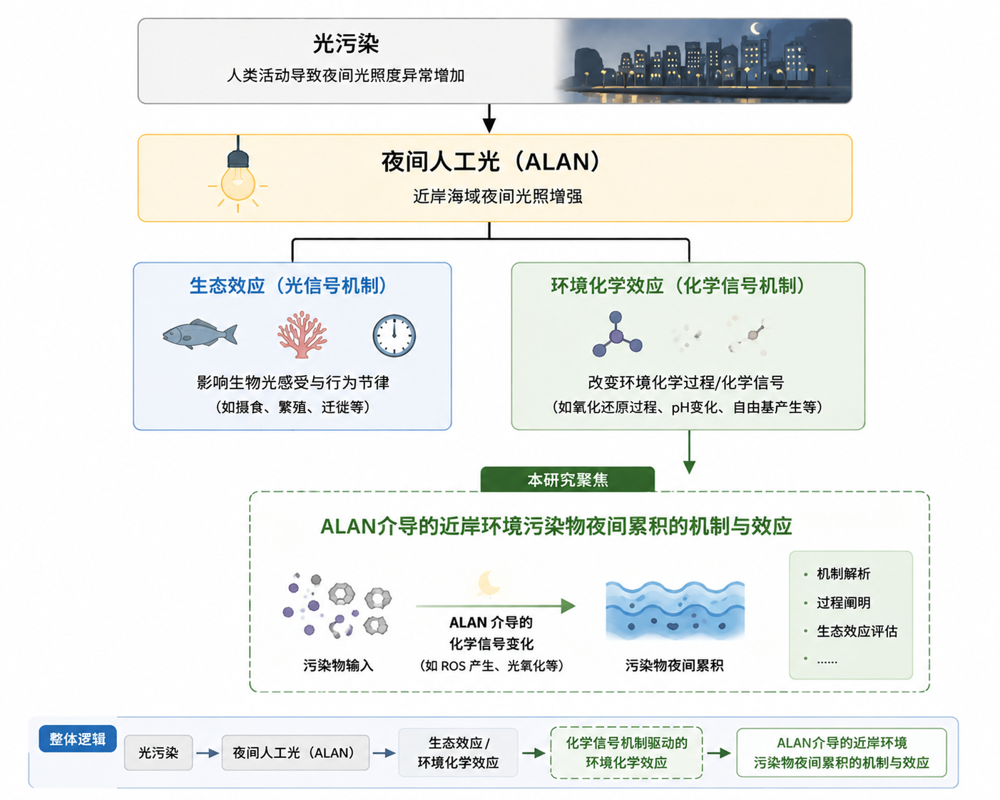

1. 看必读文献
按 A1、B、C/D、B/C、D 五组阅读，先建立 ALAN、DOM/CDOM、近岸污染物和 dark coast 管理的概念框架。
这个单文件网页用于收集学生对 ALAN × 近岸微污染物项目的三类反馈：必读文献查阅、单篇文献阅读理解、以及项目问题。所有内容默认只保存在本机浏览器中。
按 A1、B、C/D、B/C、D 五组阅读，先建立 ALAN、DOM/CDOM、近岸污染物和 dark coast 管理的概念框架。
选择一篇具体文献，回答 8 个固定问题，重点写清暗夜保护关联、ALAN 设置方式和光污染定义。
只收集与本项目有关的问题，例如哪篇文献读不懂、哪个机制不清楚、哪句话担心越界。

图示逻辑：光污染导致夜间人工光（ALAN）增强；ALAN 对环境的影响分为“光信号机制导致的生态效应”和“化学信号机制导致的环境化学效应”。本项目聚焦后者的一部分，即 ALAN 介导的近岸环境污染物夜间累积机制与效应。该图用于理解研究问题，不表示实验结果已经完成。